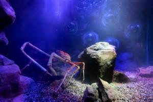

Il granchio gigante del giappone
Il Granchio gigante del Giappone (Macrocheira kaempferi Temminck, 1836) è il più grande artropode vivente. è l'unica specie vivente del genere Macrocheira; altre specie del genere sono state descritte solo come fossili.
Vive nelle profondità dell'Oceano Pacifico (200-300 m sotto il livello del mare) nei pressi del Giappone. Ha una vita media di circa 100 anni. Nella maturità può raggiungere una apertura delle zampe sino a 4 m, con una dimensione del corpo sino a 37 cm ed un peso sino a 20 kg. Il granchio ha un corpo arancione, ma ha punti bianchi nelle sue sottili zampe. Gli artigli degli esemplari maschi divengono più lunghi delle sue zampe; quando aperti questi possono allungarsi per 3 metri. La larghezza del guscio, ovale e arrotondato può arrivare a 30 cm, e raggiungere la lunghezza di 40 cm.
I suoi occhi compositi sono situati sulla parte anteriore, e due aculei (spine) sporgono tra essi. Gli esemplari più giovani sono caratterizzati da peli e spine sul guscio, e i loro aculei frontali sono più lunghi, ma questi gradualmente si atrofizzano quando diventano più vecchi.
La M. kaempferi è diffusa nell'area del Pacifico che circonda l'arcipelago del Giappone. Predilige i fondali sabbiosi a profondità di 150 - 800 m, più frequentemente tra i 200 e i 300 m. In primavera depone le uova su fondali meno profondi (50 m).